Stuzzichini
Gli stuzzichini sono un trionfo di sapori, da "Dippers mc cain" a base di patate sfogliate consegnate con due bustine di salse, a "Gamberi cornflakes" croccanti e fritti. Ogni opzione è pensata per soddisfare il desiderio di qualcosa di gustoso e sfizioso.
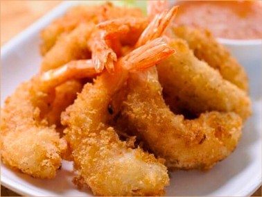
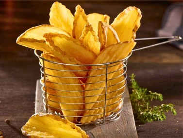
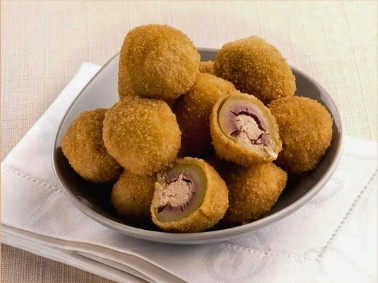
Pizze Alfredo
Le pizze sono il fiore all'occhiello di "Alfredo". Dalla classica "Margherita" alle creazioni più audaci come "Divina" con bufala affumicata, zucchine grigliate, speck e pan grattato, ogni pizza è un capolavoro di sapori freschi e ingredienti di alta qualità.
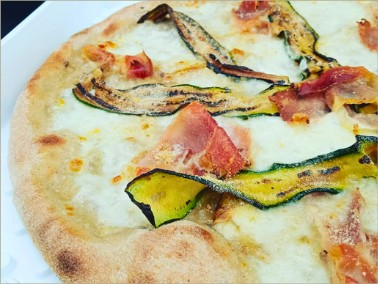
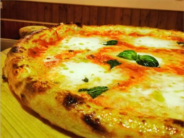
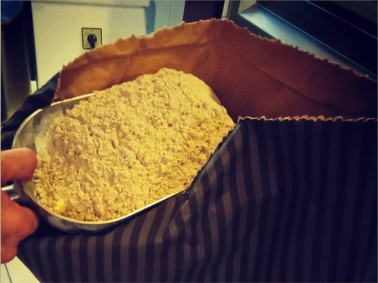
Pizze rosse e bianche
Le opzioni di pizze rosse, bianche e gluten free offrono una vasta gamma di scelte per soddisfare tutti i gusti. Dalla classica "Diavola" alla raffinata "Cerignolese" con bocconcino di fiordilatte, pomodorino fresco a fette, rucola e un filo d'olio, ogni pizza è un'esplosione di sapori unici.
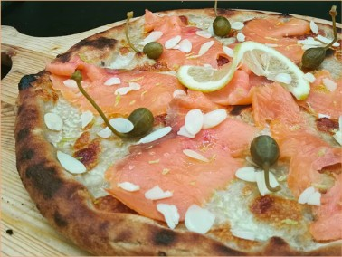
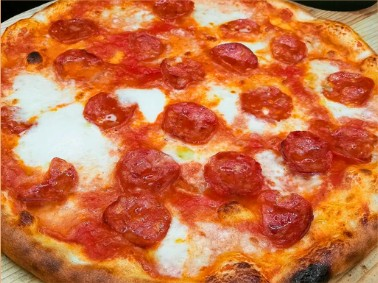
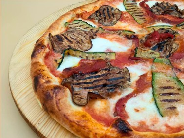
Nuove proposte
Le ultime aggiunte al menù includono pizze straordinarie come "DEL CAPITANO" con tonno in olio, cipolla rossa, capperi, melanzane fritte e salame piccante, o la sofisticata "Sunflower" con pomodorino giallo, valeriana, capocollo, stracciatella e granella di pistacchio.
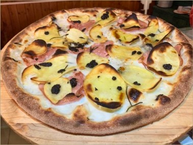
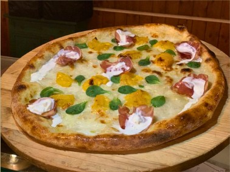
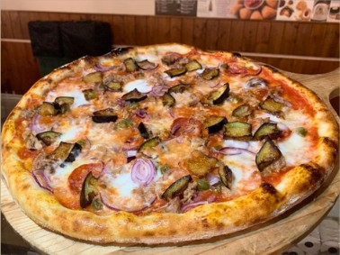
Carne grigliata
Per gli amanti della carne, la pizzeria offre una grigliata mista su un letto di rucola, composta da una bistecca di maiale, salsicce di maiale e costatine di agnello. Un'opzione deliziosa per chi cerca sapori intensi e succulenti.
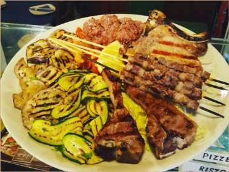
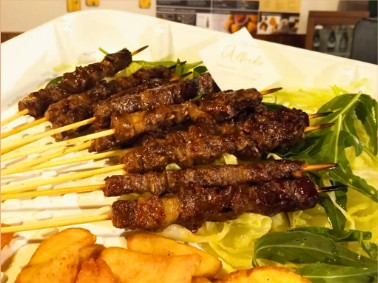
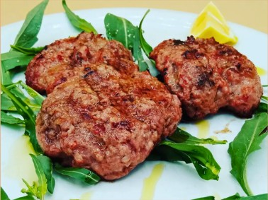
Dessert da Tommasino
Per chi ha esigenze alimentari particolari, "Alfredo" presenta una deliziosa selezione di dessert senza glutine, realizzati artigianalmente da Tommasino di Manfredonia. Dai classici come la "Cassata Tommasino pistacchio e ricotta" al sorprendente "Rocher Tommasino" con cuore di crema alla nocciola Piemonte IGP, ogni dolce è un'opera d'arte senza glutine da gustare con piacere.
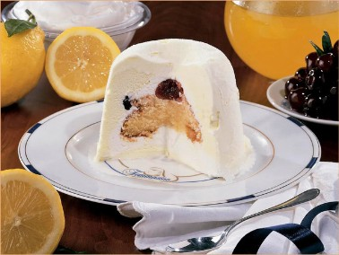
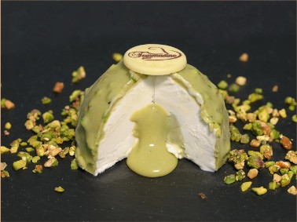
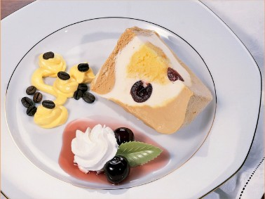
Birre e bevande
Per accompagnare le prelibatezze, "Alfredo" offre una selezione di birre, dalla classica "Peroni" all'artigianale "GHOSST", e una varietà di bevande tra cui Coca Cola, Fanta e tè.
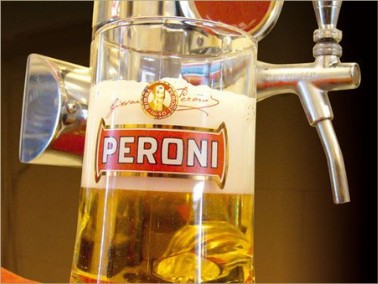
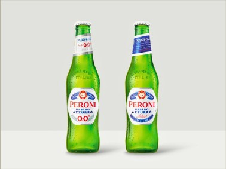
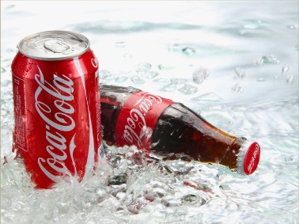